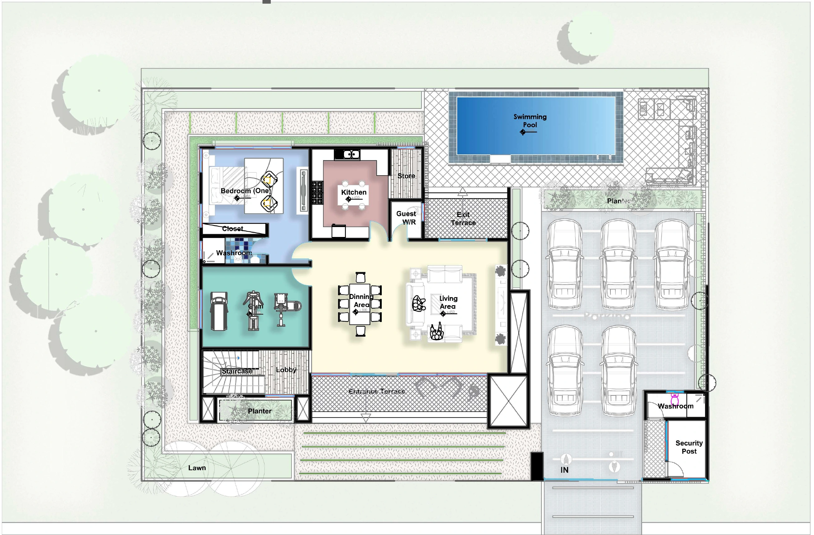

A private residence · Five bedrooms
Space to
live fully.
A composed home where generous shared spaces meet quiet rooms, open views and the garden.
01 / The idea
A home with room to breathe.
The design brings everyday life into one clear sequence: arrival, gathering, retreat.
Living and dining spaces form the social heart. A guest suite and gym sit on the ground floor, while four further bedrooms occupy the upper level around an open void and balcony. The pool and planted edges extend the house outward.
See the massing evolution02 / Massing evolution
A simple form, carefully opened.
Select a stage to see how the footprint, upper rooms and defining facade come together.
The ground floor establishes the main volume and its relationship to the entrance side of the site.
03 / On the site
The residence within its grounds.
The drawing places the house on the left, parking and the security post on the right, and the pool along the rear edge.

01 / The front steps lead up to the entrance terrace. The vehicle gate and parking court are to the right.
04 / Plans
Two levels, one connected home.
Explore the actual 2D plans. Select a level, then choose a room to see how each space fits the whole.
Choose a numbered point · Use zoom to inspect the drawing
05 / Views
Architecture from every side.
A sequence of exterior views, from the composed street facade to the more open pool edge.
Select any image to view it full screen.
One on the ground floor, four above.
Living, dining and kitchen linked to the terraces.
Pool, balcony and planted edges.